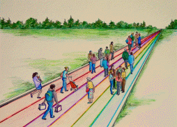

Doc/Frame

AN
EDUCATION
FRAMEWORK
Donald E. M. Glendenning
Charlottetown, PEI
2017
INTRODUCTION
Is a response to growing concern among our citizenry about the quality of existing educational services.
Helps address the desire of the public for independent information to help with their decision-making.
Grows out of questions and conversations with others who have an interest and concern about the community in which we live and work
Is Intended to provide information, increase interest and provoke questions among ourselves and with educators
Is intended to spur conversations about education
KEY DEFINITIONS
Education - any experience that has a formative effect on the way a person thinks feels or acts.
Learning - a process of engaging in experiences that have a formative effect on the way we feel, think and act
Teaching – helping another person to learn
QUALITY
A quality education system is one where:*
Learners are healthy
Environments are safe and respectful
Content is relevant
Outcomes are linked to personal and community objectives
Support is focused on learners and learning.
Information and advice is timely and independent
Teachers are professional, autonomous and accountable
*UNICEF
1
GUIDING PRINCIPLES
John Dewey once said that if he could only know one thing about a person he would want to know the person’s beliefs; in support of that view, include a number of beliefs which helped shape our views of education:
All people can learn but some may need more time and assistance than others.
Learning is an individual matter but may occur in a group setting.
The most important part of one’s education is the part that occurs in the first six years of life.
The purpose of education is to help a person gain attitudes, skills and knowledge that will serve them well while on life’s journey.
The responsibility for one’s education rests with one’s parents and/or one’s self.
Our future as a community depends, in a large measure, on the nature and level of education of our citizens.
Government’s role is (1) to encourage education among its citizens, (2) to ensure equity in its support and (3) to ensure the existence of skilled workers for the future of the community it serves.
An education system should be designed to deliver educational services needed by its citizens to the extent possible if, as and when needed.
2
LEARNERS AND LEARNING
A learner is a person who, for whatever reason, is trying to bring about change in his/her life - trying to change an attitude, gain new knowledge or add to one’s skills. But learners are neither empty jars nor blank slates; each learner carries three pieces of luggage to every new learning situation:
Certain physical, mental and emotional conditions with which the learn was born.
Prior learning, or education, resulting from formal study, home circumstances, travel, state of health, personal interests, culture in which they operate and learning styles
Aspirations and imagined future including where one will live, the work one will do and the lifestyle one will have, the nature of the family, quality of life, etc.
ROAD OF LIFE
We are all on the road of life; the road is a metaphor for the experiences .one encounters between birth and death. It is said that we all fill the following life roles:
An individual
A family member
A citizen,
A student,
A consumer and
A producer
Differences commonly include:
Timing and extent to which we engage in various
Each experiences life in his/her own way and to differing degrees.
Natural obstacles, restrictions and hurdles such as time, age, personal and family responsibilities, geography, finance,
Obstacles resulting from or even compounded and compromised by people we meet along the way.
Man-made obstacles that allow or prohibit access to learning opportunities such as an entrance requirement, a qualification, an age level, physical characteristics, level of education, level of wealth, temperament or a credential.
Personal baggage including what we were born with, what we learned since and our aspirations.
3
TEACHERS AND TEACHING
The future we want may require a different mix of attitudes, skills and knowledge than the ones we now have; the process of developing the new mix is called learning; the discernable change that occurs in us as a result of learning is education, and people who help us learn are usually called parents, or if they are paid, teachers Most of us need help in at least some of our new learning experiences; students tell us that they sometimes need:
Information:
recent,
independent,
reliable,
timely
presentation,
tutoring,
demonstrations,
discussion and debate
Feedback:
effective,
valid,
transparent,
relevant
Counselling:
planning,
coaching
Opportunity:
access,
time,
funding,
transportation
Products and technologies:
textbooks,
references,
self-instructional material and
assistive technologies
8
FUNCTIONS OF AN EDUCATION SYSTEM
Governance
Leadership
Funding
Quality control
Human Resources
Information
Instruction
Counselling
Presentations
Practice
Diagnosis
Access
Quality assurance
Evaluation
Certification
Qualifications
Access
Transportation
Facilities
Internet
Products and Technology
Textbooks
Wi-Fi
Hardware
MOOCs
Facilities
Software
AN ACADEMIC RATING SCALE
|
RATING SCALE FOR READING |
|
|
5 |
Read a wide variety of complex printed materials, including technical material, with fluency, ease and without assistance
|
4 |
Read a range of printed materials with independence, fluency and ease
|
3 |
Integrate information from a number of sources into a single text
|
2 |
Read a number of pieces of text to find information, narrow range of material but requires occasional assistance when reading the daily newspaper
|
1 |
Read and interpret signs and follow written instructions
|
0 |
Does not recognize any words on a written page.
|
DEPARTMENT OF EDUCTION
“The Department of Education, Early Learning and Culture develops and delivers high quality programs and curriculum in English and French to Island children from birth to Grade 12. The department provides corporate services, including general and financial administration, staff certification, research, planning and evaluation, human resources and school athletics. The Culture Division provides leadership, programs and services, including library services, historic preservation and documentation, and cultural development.
Some of the priorities in this mandate are to:
Lead the implementation of changes to advance educational excellence in the province
Provide leadership in creating opportunities for student success in the education system
Build technology capacity and engagement in schools
Work with other social policy departments on a renewed Poverty Reduction Strategy and Mental Health and Addictions Strategy
Lead the development of a ten-year Strategy on Culture to support a renewed approach to heritage and arts development
Structure and Employees
Corporate and Financial Services
Cultural Affairs
Deputy Minister's Office
Early Childhood Development
English Innovation, Education and Programs
External Relations and Educational Services
French Innovation, Education and Programs
Joint Consortium School Health
Leadership and Learning
Libraries and Archives
Minister's Office
Public Schools
Education Authorities:Public Schools Branch(link is external)
School div
CURRICULUM
Curriculum and Support Documents

Education 20/20 Inc.
Education 20/20 Inc. is an independent, broad based, national, not-for-profit education organization, located in Charlottetown, PEI and is governed by a volunteer Board of Directors.
Vision: A quality education for every Canadian.
Mission: To support and strengthen a culture of learning for all Canadians.
Mandate: To contribute to the education of our citizens by providing information, encouragement and support for a quality education for all citizens.
Activities:
Monthly electronic newsletter
Website
Occasional papers
Workshops
Directors:
Don Glendenning, President
Bill Whelan, Vice President
Alice Taylor, Secretary
Tim McRoberts
Tom White-Hassler
Katherine McQuaid
Donald DesRoches
Amber Jadis
Anne Miller
GAPS
Local engafement souis
Qualification service
Rating scale
Coodrination
Autonomy
Ccountability
Key skills
Literac
Numeracy
Science
Interpersonaal
Self management
Navigation - local
Learning assistance
Information
Counselling
Human resources
Technology
Products
A CALL FOR ACTION
On April 9, 2015 , in the mids’t of a Provincial elction, ducaation 20/220 Inc. issued this Call for Action.
A “clear and compelling” vision of education for all Islanders. We believe that having such a statement is required, especially for a service as large and complex as education
A learner centered service model that provides support in all domains to learners if, as, when and where needed. Doing so would involve student centered outcomes, criterion referenced assessment, flexible scheduling, challenge for credit arrangements, and greater au-tonomy and accountability for teachers.
Leadership in the creation of a learning culture and providing a quality education for every Islander. Government should focus on matters of planning, setting priorities, funding, monitoring, and quality control, ensuring the availability of professional resources, home sup-port for preschool children, information and continuing education.
Autonomy for schools in their day to day decision-making
An independent qualification body for the purpose certifying individual levels of achievement for persons wanting or needing such documentation.
A service delivery model where professionals are directly accountable to clients for the nature, extent and quality of service provided
Put in place an externally controlled strategy to encourage and support innovation.